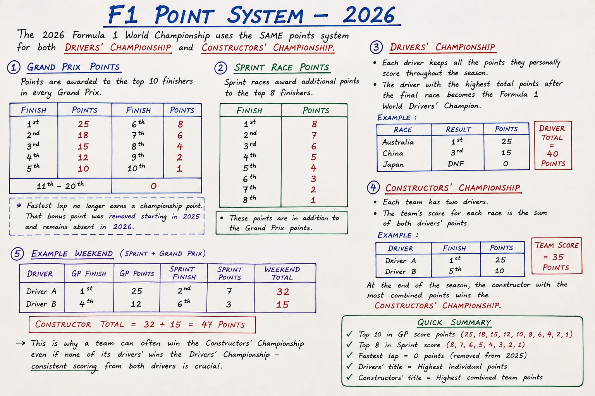

Formula 1's points system looks simple on the surface — whoever scores the most over a season wins — but the actual mechanics behind that number are easy to get wrong. Sprint weekends, the vanished fastest-lap bonus point, and a red-flag rule that most explainers never mention all change the maths in ways that matter. Here is exactly how scoring works in 2026, with a live calculator so you can work out any result for yourself.
Grand Prix Points: Top 10 Only
Points are awarded to the top 10 classified finishers in every Grand Prix, on a fixed scale that has been the standard since 2010: 25 points for the win, down to 1 point for tenth. Finish 11th or lower, and you score nothing — no partial credit, no participation points.
| Finish | Points | Finish | Points |
|---|---|---|---|
| 1st | 25 | 6th | 8 |
| 2nd | 18 | 7th | 6 |
| 3rd | 15 | 8th | 4 |
| 4th | 12 | 9th | 2 |
| 5th | 10 | 10th | 1 |
Sprint Points: A Second Payday, Top 8 Only
Six weekends on the 2026 calendar — Shanghai, Miami, Montreal, Silverstone, Zandvoort and Singapore — run a Sprint race on Saturday, awarding a separate points scale to the top 8 finishers on top of whatever they score in Sunday's Grand Prix. It is a genuinely different scale from the main race, topping out at 8 points rather than 25.
| Finish | Points | Finish | Points |
|---|---|---|---|
| 1st | 8 | 5th | 4 |
| 2nd | 7 | 6th | 3 |
| 3rd | 6 | 7th | 2 |
| 4th | 5 | 8th | 1 |
Try It Yourself: The Weekend Points Calculator
Pick a Grand Prix finish and, if it's a sprint weekend, a Sprint finish too — the totals update instantly.
Grand Prix Finish
Sprint Finish (optional)
The Bonus Point That Quietly Disappeared
From 2019 to 2024, the driver who set the fastest lap of the race earned an extra point — provided they finished in the top 10. It sounds harmless, but it started shaping strategy in unhealthy ways: teams with nothing left to gain in the race would pit a driver for fresh tyres purely to snatch (or deny a rival) that one bonus point, sometimes compromising their own race in the process.
The point was scrapped entirely from the 2025 season and remains gone in 2026. The maximum a driver can now score in a single Grand Prix is a clean 25 points, and a team's maximum from one race weekend is 43 (a Grand Prix one-two).
The Rule Most Guides Miss: Red-Flag Scoring
Most explainers stop at the two tables above — but there is a third scale that only shows up when a race doesn't run to completion. Following the controversial handling of the 2021 Belgian Grand Prix, the FIA introduced a sliding scale of reduced points for races stopped early:
- Under 25% of race distance completed: top 5 only, at a reduced scale
- 25–50% completed: top 10 score, at a reduced scale
- 50–75% completed: top 10 score, closer to but still below full points
- Over 75% completed: full points awarded as normal
It is a rare scenario, but it has swung a championship before — and it is the detail that separates a genuine understanding of F1 scoring from just memorising two tables.
How the Drivers' Championship Works
Simple in principle: every driver keeps every point they personally score across the season — Grand Prix points plus any Sprint points — and whoever has the most after the final race is champion. There is no dropping your worst results, no bonus for consistency beyond the points themselves. Check the real thing in progress on our live championship standings and graph, or see any driver's full season log.
How the Constructors' Championship Works
The constructors' title uses the exact same points scales, but adds together both drivers' scores for the team at every round. This is precisely why a team can win the Constructors' Championship even when neither of its drivers wins the Drivers' title — consistent scoring from both cars, race after race, outweighs one driver having a single standout season. It is also why a team's second driver having a strong campaign matters just as much to the constructors' fight as the lead driver's headline results. Compare how it plays out for real on any team's points log.
Quick Reference

A quick-reference summary of the 2026 scoring system.
Keep this page bookmarked for race weekends — and see every session time for the current Grand Prix on our Race Hub.